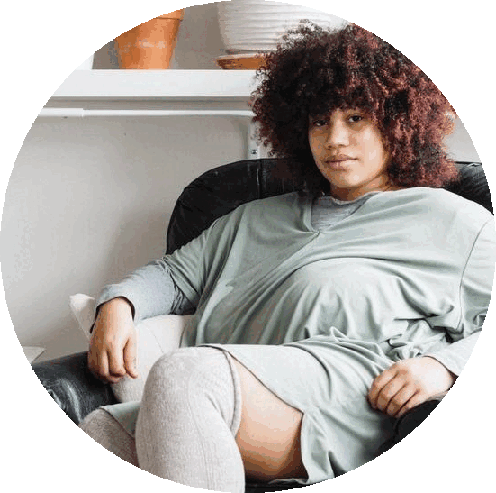

|  |
🌹LAMARRECo-Founder of AfroFuture FEST & Diasporanaut i like to wander;web developer, lens based documentarian, writer, illustrator, and cultural curator. I 💙 having #criticalconversations & I host a 🎙podcast. |
| Dates | Work |
|---|---|
| 2022 | Até Mais: Until More an Anthology of Latinx Futurisms, Deep Vellem Publishing, Dallas, TX |
| 2022 | Founder of CODEKINK, Co-work Community(SPACES), Global Diaspora |
| 2022 | Founder of We Gon' Get FREE!, Podcast & Visual Dialogue, Global Diaspora |
| 2021 | Campaign Photographer & Videographer, Technically Ghetto, Full Set Society, Detroit, MI |
| 2021 | Co-Founder of Diasporanaut, Print & Media Homebody, Global Diaspora |
| 2021 | Second Camera, Set Photographer, Body Painter, Iridescence film, Münchner Kammerspiele, Germany |
| 2020 | Keynote Performer, Performing Black Futures, Association for Theater and Higher Education Conference(ATHE), Virtual |
| 2020 | Editorial Photographer, Rebel Nell, Detroit, MI |
| 2020 | Workshop Lead, Time Now for Ghosts, Center for Afrofuturist Studies, Iowa City, IA |
| 2020 | Workshop Lead, "We Transform:BlackFuturist?, Springfield College, Springfield, MA |
| 2019 | Director of VIRAGO, Experimental Documentary, Detroit, MI |
| 2019 | Co-Founder of AfroFuture FEST, Feedom Freedom, Detroit, MI |
| 2019 | Founder of Complex People Book Club, Room Project, Detroit, MI |
| 2019 | Conference Socail Media Consultant, Local Progress: Equity, Justice, & Power, Detroit, MI |
| 2019 | Co-Director of AfroFuture Youth, Allied Media Sponsored Projects, Detroit, MI |
| 2019 | Workshop Lead, Vibranium Visions: Art and Tech Through the Black Eye, Smith College, Northampton, MA |
| 2019 | Co-Founder of AfroFuture Film Series, Detroit, MI |
| 2018, 2020 | Illustrator, Museum of Contemporary Art Detroit(MOCAD) Monster Drawing Rally, Detroit, MI |
| 2018 | Visual Conultant, Project Destined, Manhattan, NYC |
| 2018 | Conference Photographer & Videographer, Public x Design, Detroit, MI |
| 2018 | Creative Director & Photographer, Detroit Clothing Circle, Detroit, MI |
| 2018 | Social Media Manager, Art Babes, Detroit, MI |
| 2018 | Creative Director & Photographer, Pingree Fall Campaign, Detroit, MI |
| 2018 | Body Painter, Detroit Still Exists(DSE) summer campaign, Detroit, MI |
| 2018 | Body Painter, Riding with Aunt DDOT, Film, Detroit, MI |
| 2017-2018 | Muralist, Baltimore Gallery, Detroit, MI | 2013-2016 | Workshop Lead, Detroit Design Festival, Detroit, MI |
| 2013-2016 | Studio Assistant/Instructor, Dana Keaton Collection, Detroit, MI | 2014-2015 | Youth Programs Assitant, Museum of Contemporary Art Detroit(MOCAD), Detroit, MI |
| 2013-2015 | Gallery Assistant, Arts Extended Gallery, Detroit, MI |
| Archiving visual & written art | ⭐️⭐️⭐️ |
| Programming events and workshops | ⭐️⭐️⭐️⭐️⭐️ |
| Fashion Construction | ⭐️⭐️⭐️⭐️ |
| Creative Direction | ⭐️⭐️⭐️⭐️⭐️ |
| Social Media Consulting | ⭐️⭐️⭐️⭐️ |
| Photography | ⭐️⭐️⭐️⭐️ |
| Intro to Afrofuturism | ⭐️⭐️⭐️⭐️⭐️ |
| Illustration | ⭐️⭐️⭐️⭐️ |
| Grant Writing | ⭐️⭐️⭐️ |
| Web Development | ⭐️⭐️⭐️⭐️ |